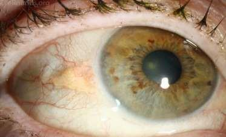

Conjunctiva · Degenerations of the Conjunctiva
Pinguecula and symblepharon

Pinguecula — Definition
Pinguecula is a yellow degenerative nodule occurring in old people on the nasal side of the limbus.
- It is due to the effects of ultraviolet rays.
Differential diagnosis
- Phlycten (see before).
Treatment
- No treatment (if cosmetically bad it can be excised).
Symblepharon — Definition
- It means adhesion of the palpebral conjunctiva to the ocular surface.
Causes
- Any lesion that results in two baring areas; one in the palpebral conjunctiva and the other in the bulbar conjunctiva or the corneal surface as:
- Trachoma.
- Trauma (especially chemical injuries).
- Postoperative.
- Membranous conjunctivitis.
- Autoimmune diseases: Stevens - Johnson disease & Ocular pemphigoid